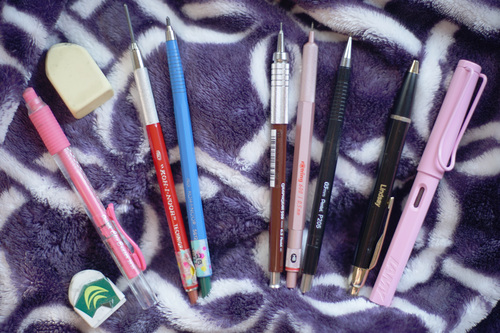
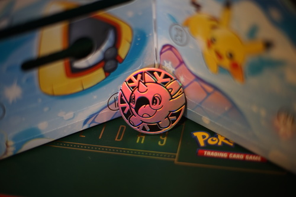
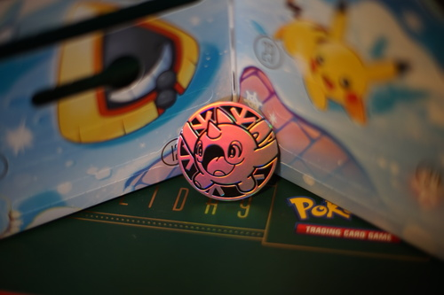

I'm limiting this to pens and pencils I have used in the last 2 weeks. I own many more, but these ones are actually in use.
Erasers:
The arch shaped holder gimmick does help after all.
I have a lot of these, but this one is pink! It's good for erasing tight spots, but not too tight.
It's nice and soft and a cute yellow~
Lead holders:
2H lead. I use this constantly for my under sketching. I chose to put the lead I spend more time with in it rather than the plastic lead holder.
2B lead. Used for darker lines. Staedtler puts a little metal piece around the ends of their refills, and it doesn't work in this holder. You have to snap it off.
I really like my lead holders even though they are just expensive pencils. It seems to be a little hard to locate the refills for these if you're against purchasing "art alternatives". Staedtler made the graphite refills I'm currently using. I usually keep them extended a decent amount. The blue one is just short because I snapped the lead recently and kept using the broken off piece.
Mechanical pencils:
I just bought this so it's filled with whatever lead Pentel put in it. However, the darkest graphite I can find for this is B. I have yet to find there's an advantage over .5, but it is a sturdy feeling pencil.
I can't recall which lead I filled this with, but it's harder than 4B. Maybe HB? Generally used when I'm trying to figure out details in the light sketch.
4B graphite. I use it for fine details in the darker sketch.
Pens:
If I have to use a ballpoint for water resistance, I'm going to use a nice one. I'm sure this one was made in China though since it's from Q2 2013. It's got a knock off refill in it because I'm trying to use up the ones that have appeared in my life. I think this is my last one!
Inked in J. Herbin Parfum Rose. I haven't inked any drawings lately. I use this one for writing.
 

A coin of Cetoddle? Cewaddle? Grusha's friend pokemon, whoever he is!